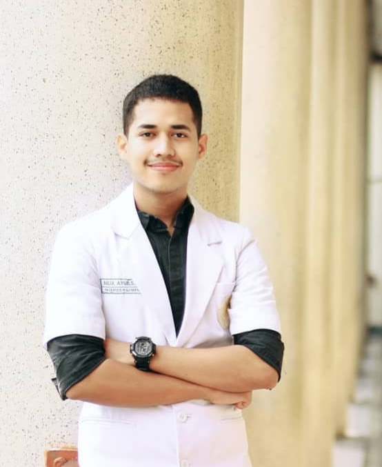

Tentang
Website ini tentang saya, Aulia Ayub, dan pengalaman serta beberapa penghargaan yang saya raih dalam perlombaan yang dilakukan saat menempuh pendidikan kedokteran gigi di Universitas Gadjah Mada.
Waktu luang saya selalu saya manfaatkan untuk berolahraga, salah satunya bermain bola dan membaca buku.
Tahun 2020 adalah akhir dari masa koas saya. Dan semoga pendidikan yang telah saya asah dalam 6 tahun ini dapat berguna untuk masyarakat.
Follow media sosial saya untuk mengenal lebih dekat! Email: auliaayub20@gmail.com dan aulia_ayub@gmail.ugm.ac.id. Instagram: auliabalweel
Pengalaman
Dari tahun 2014 hingga saat ini, banyak riwayat organisasi yang saya ikuti salah satunya menjadi Ketua Angkatan KOAS 59 FKG UGM. Tahun ini, saya menjadi ketua GAMAPRO FKG UGM pada tahun 2019/2020, menjadi kepala (Chief) Koas Bedah Mulut FKG UGM 2019/2020, dan Wakil Ketua Panitia Olympiad of Dentomaxillofacial Radiology.
Tahun 2018 saya menjadi Koordinator Asisten Anatomi 2018/2019. Panitia bulan kesehatan gigi nasional(koordinator konservasi) 2018.
Saya juga pernah menjadi koordinator Medika SCCF 2016/2017, Koordinator KKN UGM -- JTG 64 2017, Steering Committee (SC) Depa's Infection 2016/2017
Menjadi Wakil ketua Departemen Akademik Denta Paramitha 2014/2015, Staff KAMMUS FKG UGM 2014/2015.
Dari banyaknya pengalaman tersebut, beberapa kali saya diundang menjadi pembicara di acara-acara kampus. Berikut adalah beberapa foto yang saat pengalaman-pengalaman saya.
Penghargaan
Tahun 2015 saya diberkahi dengan menjadi Penerima Dana Hibah Penelitian Dikti PKM 2015/2016. Kemudian tahun 2016 saya menjadi Finalis PIMNAS PKM 2016/2017
Lompat setahun kemudian, tahun 2018 saya mengikuti beberapa perlombaan. Alhamdulillah, saya menjadi Juara 1 3M Pilot Project Competition, juara 3 Periapical Unjani Dentistry Competition, juara 3 Udayana Dentistry Scientific Competition, dan juara 3 Lomba Poster Dies Natalis FKG UGM
Tahun 2019, saya kembali mengikuti Udayana Dentistry Scientific Competition dan menjadi juara 1. Lalu saya juga juara 1 Lomba Research International ADS UNAIR 2019. Saya juga mengikuti lomba yang diselenggarakan oleh Pepsodent yaitu Pepsodent-BKGN Project Competition dan menjadi juara 1.
Saya dipertemukan oleh direktur pepsodent dan staff, sampai-sampai media online seperti LINE TODAY dan Media Kampus UGM meliput pertemuan saya beserta tim. Saya berkesempatan pergi ke SUMBAWA karena menjadi juara 1. Bahkan, pepsodent membuat iklan tentang dokumentasi kami (saya dan tim) di SUMBAWA.
berikut adalah beberapa foto yang saya simpan: